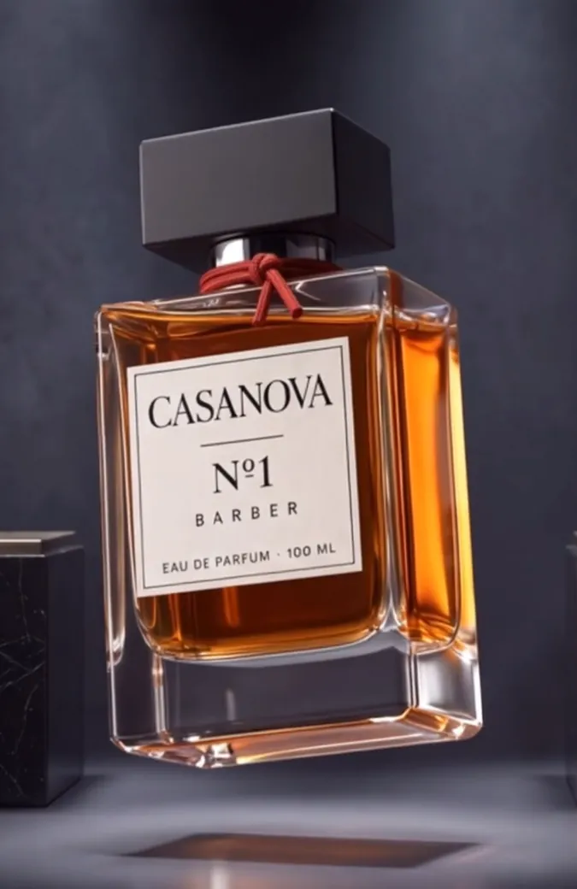
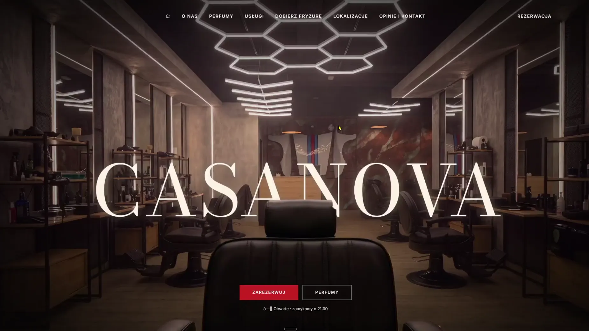
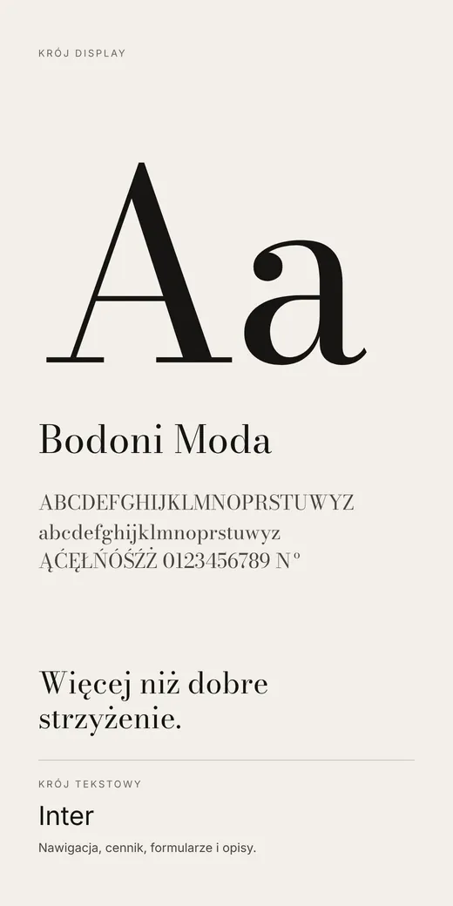
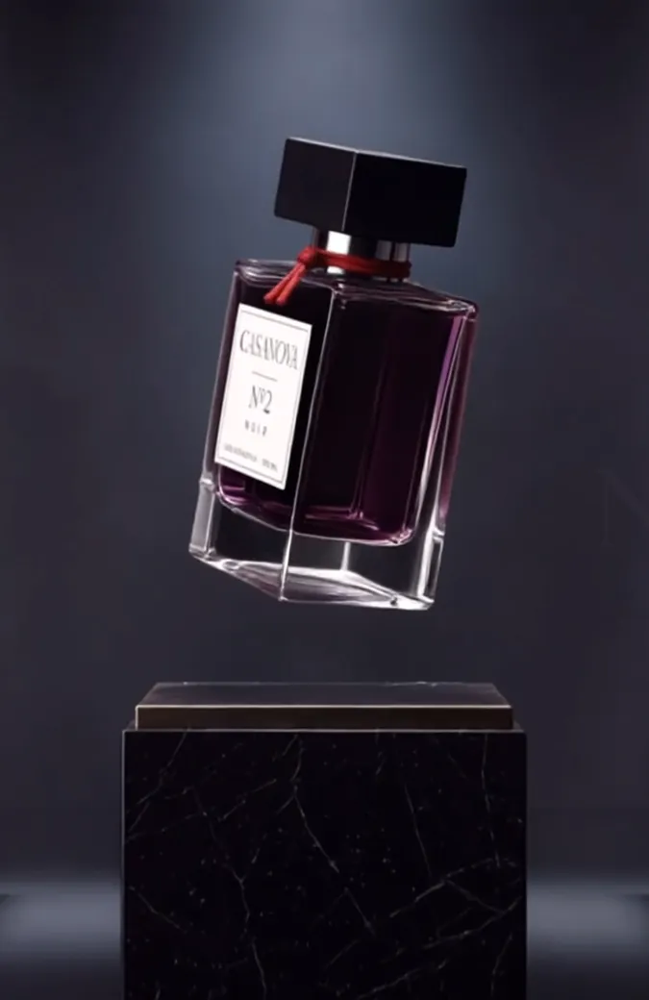
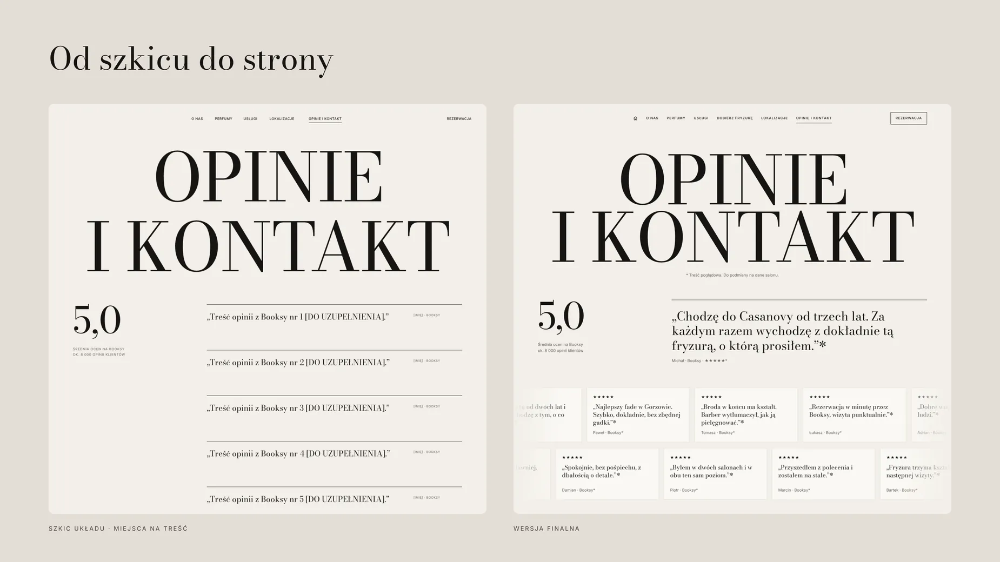
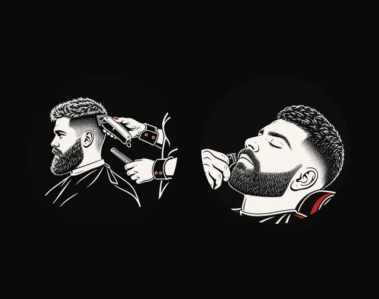
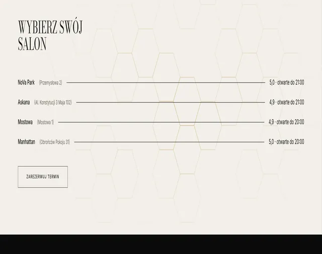
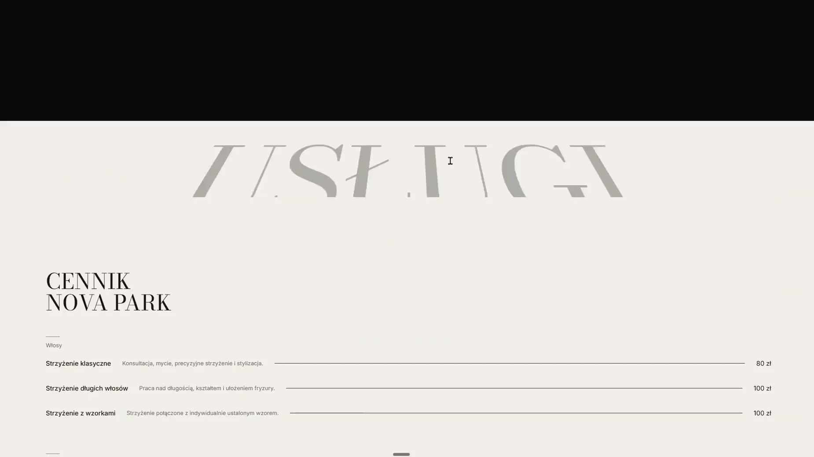

CASANOVA BARBERSHOP
I designed and built a website concept for Casanova Barbershop in Gorzów Wielkopolski. The site takes visitors from the salon's atmosphere straight to Booksy booking and works on phone, tablet and desktop.









